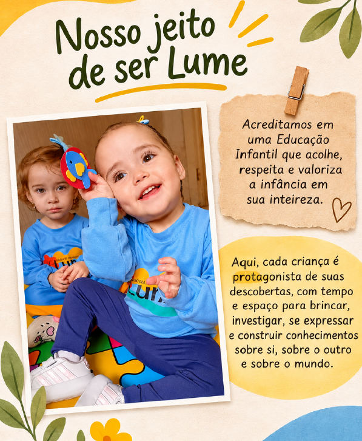
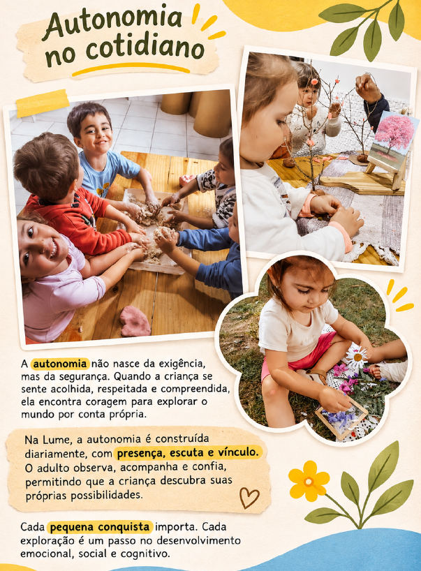
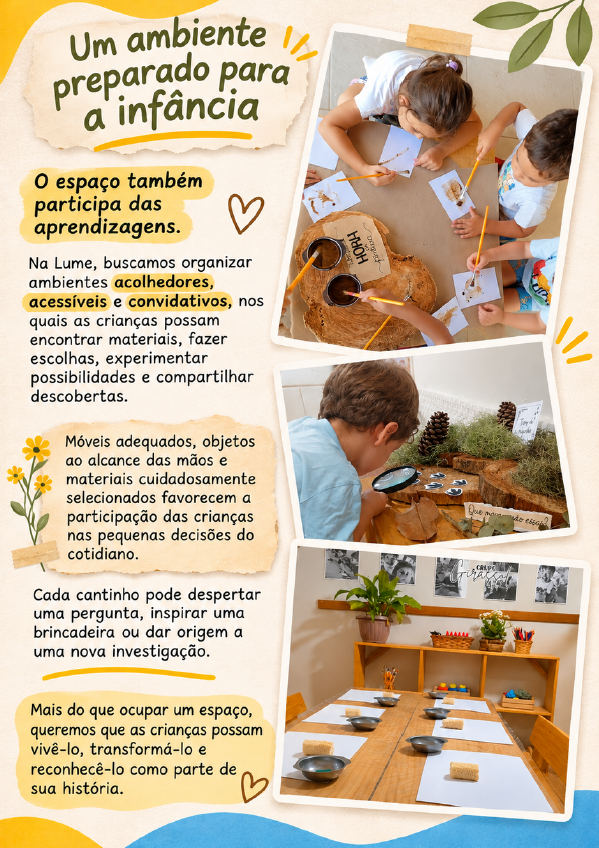
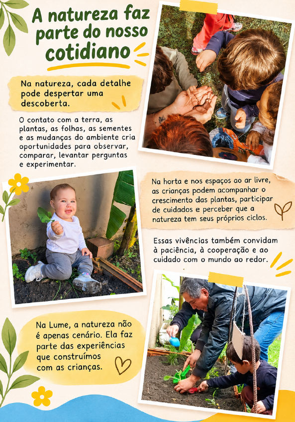
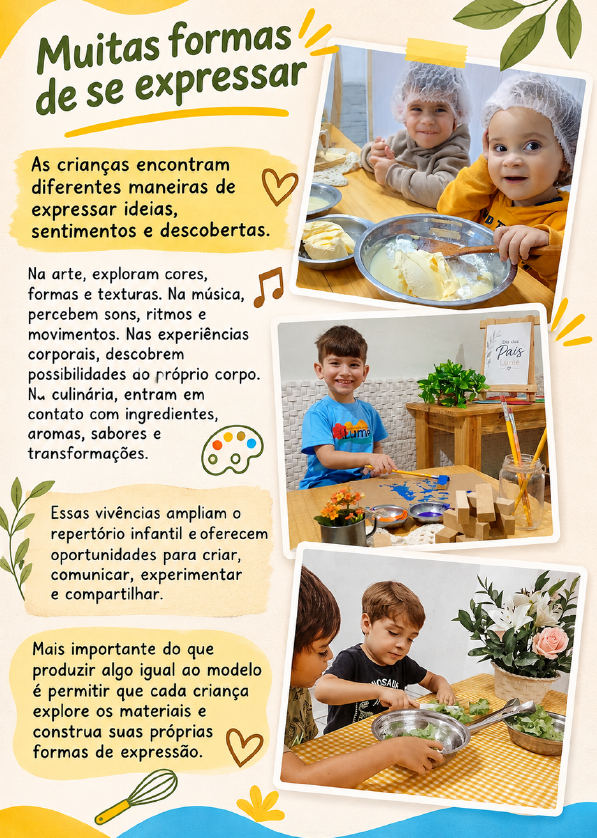
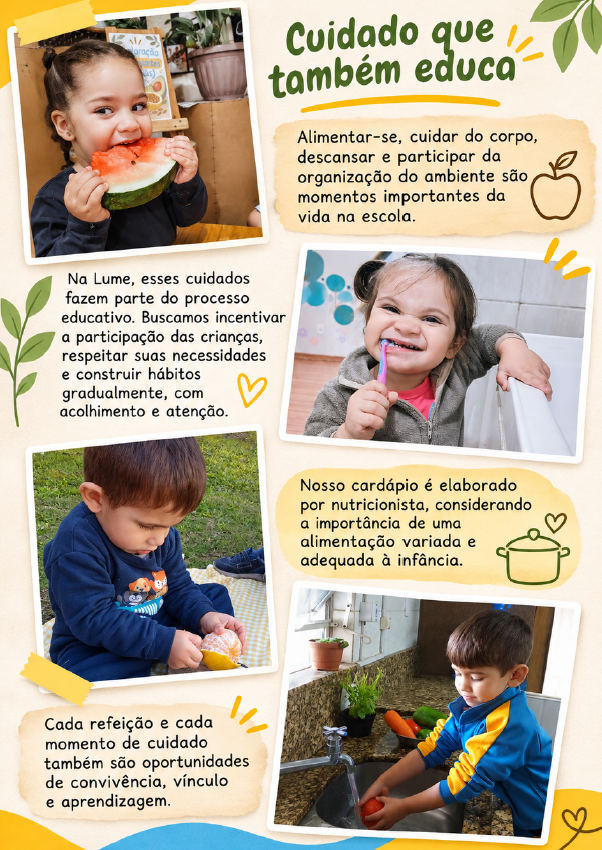
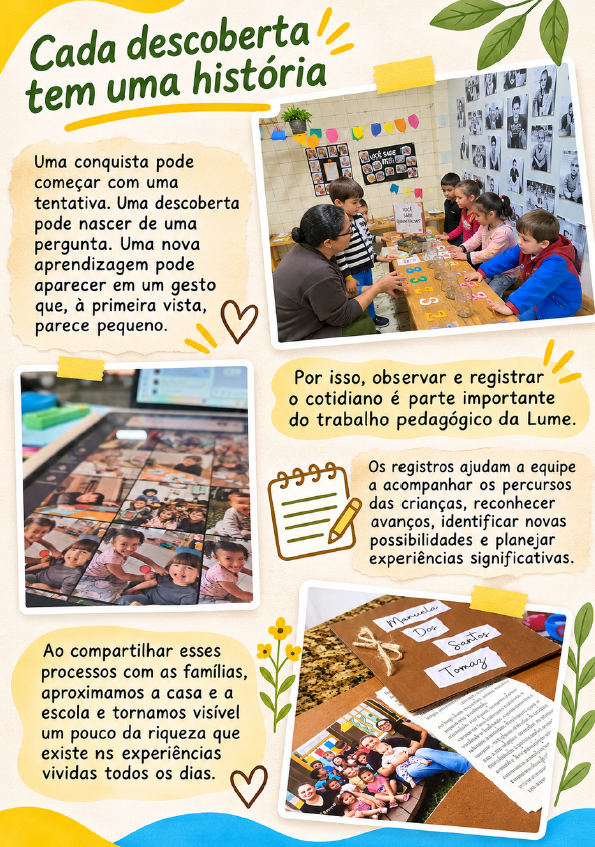
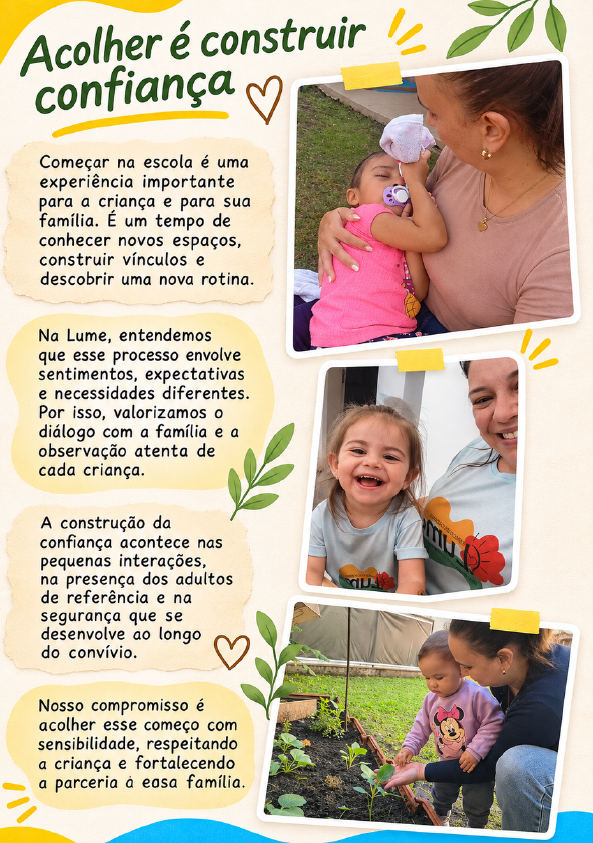
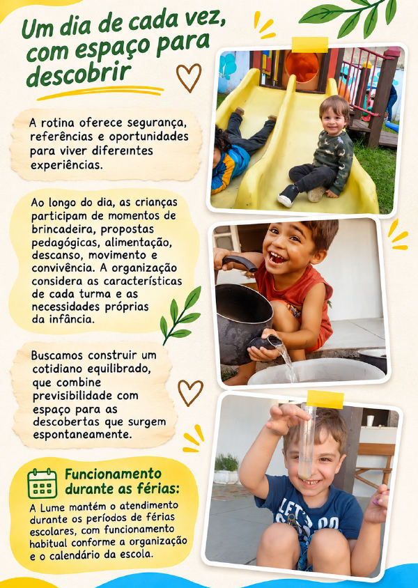
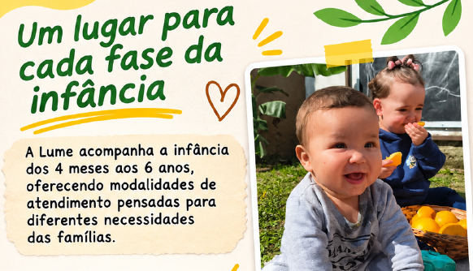

Espaço Educacional Lume
Nosso jeito de ser Lume
Infância respeitada. Descobertas todos os dias.
Conheça os princípios que orientam nossa forma de acolher, cuidar, brincar e aprender junto com as crianças. Cada experiência é uma oportunidade de construir autonomia, vínculos e descobertas.
Uma infância vivida com tempo, presença e respeito
Na Lume, acreditamos em uma Educação Infantil que acolhe, respeita e valoriza a infância em sua inteireza. A criança é protagonista de suas descobertas, com tempo e espaço para brincar, investigar, se expressar e construir conhecimentos sobre si, sobre o outro e sobre o mundo.










Venha conhecer de perto o nosso jeito de ser
Será um prazer apresentar a Lume e conversar com sua família sobre nossa proposta e rotina.
Converse com a Lume pelo WhatsApp